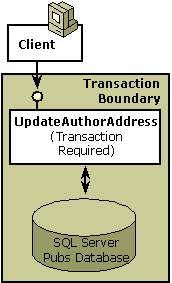

In this step, you will learn the following:
The UpdateAuthorAddress component, the component to be created in this section, updates the address of an existing author in the Pubs database. The Pubs database is a sample database that ships with Microsoft SQL Server. It contains publishing information such as author names, addresses, and book titles.
[!Note]
Pubs is the data store that is used throughout this primer.
Â
Because UpdateAuthorAddress updates a data store, it is advisable to include the work in a transaction, as shown in the following illustration, so that when a client calls the component, COM+ automatically starts a transaction and enlists the database (resource manager) in that transaction. (For detailed information about transactions in COM+, see COM+ Transactions.)

To make UpdateAuthorAddress a transactional component, the following steps are required:
The component must be written. For extra protection, a subroutine is added, verifying that COM+ created the object in a transaction. Also, basic error handling is included in the component to simplify error recovery. Transaction verification and error handling enhance the reliability of the component. (See Step 1 Sample Code for a complete listing of the UpdateAuthorAddress component.)
After adding the component to a COM+ application and installing the application, the transaction attribute must be set to Required, which guarantees that COM+ creates each UpdateAuthorAddress object in a transaction. For instructions on how to set the transaction attribute for a component, see Setting the Transaction Attribute.
[!Note]
Setting the transaction attribute on a component defines how COM+ creates each object with regard to transactions. Transaction attribute values are Ignored, Not Supported, Supported, Required, and Requires New. The Required value is not one of a component's default attribute values.
Â
COM+ binds the transaction service with just-in-time (JIT) activation and concurrency. When you declare a component to be transactional, COM+ also enforces JIT activation and concurrency protection (synchronization).
The UpdateAuthorAddress component opens a connection to the Pubs database, allowing the user to modify an author's name, address, or contract status. It also calls a second component, which is discussed in Step 2: Extending a Transaction Across Multiple Components.
To use the following code in a Microsoft Visual Basic project, open a new ActiveX.dll project and add references to the Microsoft ActiveX Data Objects Library and the COM+ Services Type Library.
[!Note]
The sample code in this primer is for purposes of illustration and may not be the most efficient for actual staging and production.
Â
Option Explicit
'
' Purpose: This class is used for updating an author's address.
'
' Notes: IMPT: This component implicitly assumes that it will
' always run in a transaction. Undefined results may
' otherwise occur.
'
'----------------------------------------------------------
' VerifyInTxn subroutine
' Verifies that this component is in a transaction.
' Throws an error if it is not.
'
Private Sub VerifyInTxn()
If Not GetObjectContext.IsInTransaction Then
' Transactions turned off.
Err.Raise 99999, "This component", "I need a transaction!"
End If
' Component is in a transaction.
End Sub
'----------------------------------------------------------
' UpdateAuthorAddress subroutine
' Procedure to update an author's address.
'
Public Sub UpdateAuthorAddress( _
ByVal strAuthorID As String, _
ByVal strPhone As String, _
ByVal strAddress As String, _
ByVal strCity As String, _
ByVal strState As String, _
ByVal strZip As String)
' Handle any errors.
On Error GoTo UnexpectedError
' Verify that component is in a transaction.
VerifyInTxn
' Get object context.
Dim objcontext As COMSVCSLib.ObjectContext
Set objcontext = GetObjectContext
' Get the IContextState object.
Dim contextstate As COMSVCSLib.IContextState
Set contextstate = objcontext
' Validate the new address information.
' The ValidateAuthorAddress function is described in Step 2.
Dim oValidateAuthAddr As Object
Dim bValidAddr As Boolean
Set oValidateAuthAddr = _
CreateObject("ComplusPrimer.ValidateAuthorAddress")
bValidAddr = oValidateAuthAddr.ValidateAuthorAddress( _
strAddress, strCity, strState, strZip)
If Not bValidAddr Then
Err.Raise 99999, "The UpdateAuthorAddress component", _
"The address of the author is incorrect!"
End If
' Open the connection to the database.
Dim conn As ADODB.Connection
Set conn = CreateObject("ADODB.Connection")
' Specify the OLE DB provider.
conn.Provider = "SQLOLEDB"
' Connect using Windows Authentication.
Dim strProv As String
strProv = "Server=MyDBServer;Database=pubs;Trusted_Connection=yes"
' Open the database.
conn.Open strProv
' Execute the query.
conn.Execute "update authors set phone= '" & strPhone & "'" & _
" set address= '" & strAddress & "'" & _
" set city= '" & strCity & "'" & _
" set state= '" & strState & "'" & _
" set zip= '" & strZip & "'" & _
" where au_id = '" & strAuthorID & "'"
' Close the connection.
conn.Close
' Get rid of the connection.
Set conn = Nothing
' Everything works--commit the transaction.
contextstate.SetMyTransactionVote TxCommit
contextstate.SetDeactivateOnReturn True
Exit Sub
UnexpectedError:
' There's an error.
contextstate.SetMyTransactionVote TxAbort
contextstate.SetDeactivateOnReturn True
End Sub
Step 2: Extending a Transaction Across Multiple Components
Setting the Transaction Attribute
Â
Â